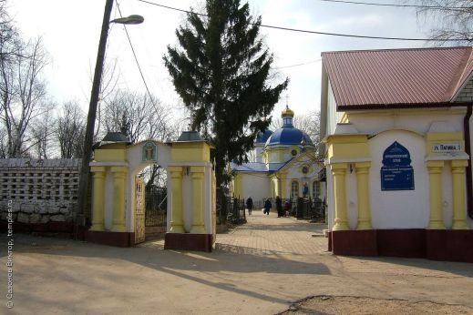
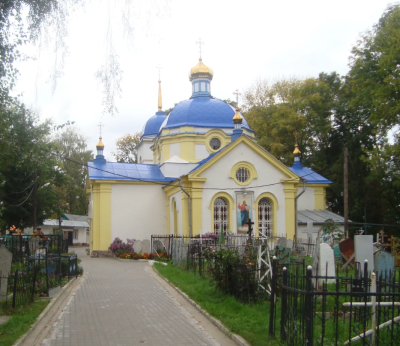

Спасо-Преображенская церковь (Липецк)
Церковь Преображения Господня (Спасо-Преображенская) — православный храм в городе Липецке на улице Папина.
Строительство
Строительство храма было начато в 1808 году прихожанами. В 1837 году на средства А. П. Сатиной были пристроены трапезная и колокольня. Тогда же были пристроены два придела, Сатина выделила храму 2 десятины 350 квадратных саженей земли.
История
В 1840 году по просьбе Сатиной А. П. Святейший Синод разрешил храму иметь своего священника, дьячка и пономаря. В 1875 и в 1892 годах храм был ремонтирован на средства тогдашнего старосты Шелихова И. И.. В 1903 году была устроена каменная ограда вокруг храма на средства Котельникова С. А..
В 1937 году храм был закрыт, власти репрессировали священнослужителей. В 1946 году храм возвращён прихожанам. В 1989 году церкви вернули колокола.
В 1991 году недалеко от храма было построено двухэтажное здание, в котором находятся крестильный храм, воскресная школа и просфорная.
Изображения:


Спасо-Преображенская церковь на карте:
|